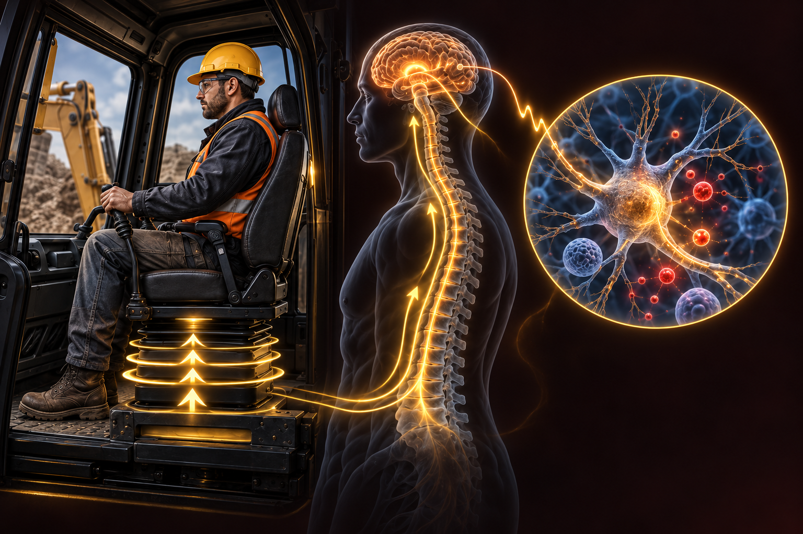

Research overview
Overview
Occupational Whole-Body Vibration and Subclinical Mild Traumatic Brain Injury: A Hypothesis on an Oxidative Stress–Mediated Pathway to Neurodegeneration
Journal: BRAIN. Broad Research in Artificial Intelligence and Neuroscience · Volume 17, Issue 3 · Pages 463–474
Publication: September 2026 · Submitted: 24 April 2026 · Accepted: 21 July 2026
Small vibrations.
Potentially lasting effects.
Repeated mechanical stress may reach beyond the spine. Explore how long-term whole-body vibration could affect the brain through oxidative imbalance.
Cumulative load · Oxidative balance
Beyond the spineMechanical forces can travel through the body.
Repetition mattersIntensity, duration and cumulative load shape exposure.
Direct evidence is limitedBiological plausibility does not establish causation.
From mechanical load to cellular stress
Show pathway detailsHide pathway detailsExplore each step and its biological role
Mechanical energy does not stop at the point of contact.
Low-frequency vibration transmitted through seats, platforms and equipment can propagate along the body toward the head. Posture, frequency and the resonance characteristics of the spine influence this transmission.
A protective counterbalance: Nrf2–Keap1Activation of antioxidant and cytoprotective genes can help cells respond to oxidative stress. Impaired protection may increase vulnerability.
A biologically plausible link. An open question.
Biologically plausible. Not yet established in humans. The strongest support is mechanistic and experimental; direct human evidence remains limited.
The essential link still needs validation.
Fatigue, reduced attention, cognitive changes and balance disturbances have been observed in occupational settings. Direct demonstrations of WBV-induced central nervous system injury in humans remain lacking.
Observations cannot establish a causal relationship. Noise, physical workload and psychosocial strain may also influence these outcomes.
Mechanical transmission, oxidative stress and the protective antioxidant response.
A window into oxidative balance
Markers of oxidative damage and antioxidant activity may help reveal subtle biological changes. Select a marker to explore its role.
MDA reflects oxidative damage to lipids and is a candidate signal of increased oxidative burden. It cannot identify WBV-related brain injury on its own.
No validated occupational WBV diagnostic thresholds. Age, lifestyle, comorbidities and other exposures can influence these markers.
Not all vibration has the same biological effect.
Intensity, frequency, duration and cumulative exposure help distinguish potential harm from controlled applications.
Chronic occupational exposure
The article proposes that repeated low-intensity mechanical stress may contribute to cumulative, subclinical neuronal alterations.
Controlled application
Experimental models show potential neuroprotective effects under specific conditions. These effects cannot be generalized to workplace exposure.
Connect exposure, biology and function.
Track change over time.
Longitudinal human data can help clarify whether repeated exposure precedes neurological change, and which measurements provide meaningful early signals.
Exposure → Molecular response → Functional change
Measure the exposure
Quantify vibration characteristics and cumulative duration alongside posture, workload and other occupational exposures.
Connect molecular and functional signals
Combine oxidative stress measurements with sensitive cognitive and sensorimotor assessments. Digital and virtual reality tools may help detect subtle changes, but require validation in WBV-exposed populations.
Separate association from causation
Use prospective follow-up, appropriate comparison groups and consistent measurements to account for alternative explanations and clarify exposure–response relationships.
NEUROVIBE LAB / INTERACTIVE RESEARCH
Exposure Workbench
Explore how mechanical exposure could connect with brain biology.

Baseline transmission4 h/day · 10 years · 1.0× · Normal equipment · Standard seating · Regular breaks
Select preventive measuresNo preventive measures applied
Relative visual emphasis only. No clinical thresholds or calibrated exposure model.
How to read this simulationMethod & limits
Use the controls to explore relative visual emphasis—not an individual prediction.
The proposed biological pathway
Hypothesis · select a stage to exploreHighlighting follows an illustrative exposure narrative, not proven biological thresholds. These processes interact rather than forming a validated linear chain.